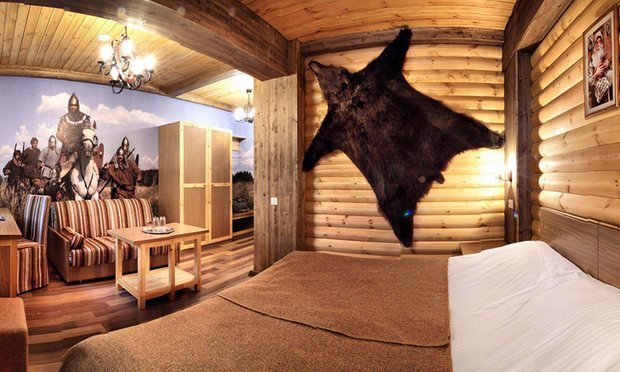

Russia’s Golden Ring: day trips from Moscow into history and heritage
A short train ride north-east of Moscow lies a collection of towns foreign tourists often miss, but they’re rich in culture, tradition and fantastic sights
Contents
The Golden Ring is a popular destination for Russian tourists: the towns in the region are ancient, and many were important centres in medieval Russia. But this area, north-east of Moscow, has more to offer, such as traditional food, and nature straight from Russian fairytales. Many visitors buy package tours for the entire region, but it’s easy to visit the towns on day trips from the capital, especially if you’re not ready for a week-long tour. The journey times to most are a couple of hours by train from Moscow.
Yaroslavl
What to see The heritage of this place is vast: the Transfiguration monastery, founded in the 11th century, was a favourite of Ivan the Terrible and is now a museum. It is also part of the city’s large Museum Reserve. A walk along the banks of the Volga, the longest river in Europe, is as much a cultural activity as it is a hike. The Governor’s house museum has an excellent collection of the Yaroslavl school of icon painting and the Music and Time Museum has the country’s largest collection of antique record players, vinyl records and clocks.
For dinner, consider Ioann Vasiliyevich (Revolutsionnaya Street), a restaurant themed after a Soviet film but interesting even to those who haven’t seen it. The decor is a mixture of medieval Russian halls and 1970s Soviet flats, and the food combines traditional Russian and Soviet cuisines. The restaurant is a part of the Cinema Club hotel.
How to get there By train from Moscow’s Yaroslavskiy station. Return tickets from £18, journey takes around four hours.
Where to stay The Cinema Club has private rooms from £33. For a more affordable stay, go to Like Hostel (25B Andropova street), only a few streets away, with dorms from £6 and private rooms from £18.
Vladimir

What to see This ancient Russian city is a must-see for its traditional white stone architecture and monumental Orthodox cathedrals: the Cathedral of Saint Demetrius and Dormition (Uspensky) Cathedral – both on Bolshaya Moskovskaya Street. The Golden Gate, which marks the entrance into the old town, is another famous landmark. For those interested in traditional crafts and souvenirs, the Museum of Crystal and Lacquer Miniatures is in the Old Believers Trinity Church behind the Golden Gate, and also exhibits traditional embroidery. The Gingerbread museum might interest those with kids or a sweet tooth – a standard tour includes a tasting. The museum’s cafe, called Blinnaya Izba (Blini Hut), serves traditional Russian crepes, blini, with a variety of fillings and toppings. If you’re in the city for more than a day, consider a trip to the ancient Bogoluybovo village, a 20-minute drive from the city and home to the Unesco-protected Church of the Intercession, on the banks of the Nerl river.

How to get there Trains from Moscow’s Kursky or Yaroslavskiy stations cost from £14 return and take between 90 minutes and three hours.
Where to stay Vozduh hostel is a five-minute walk from the Golden Gate and has dorm beds from £6 a night. Orion hotel, close by on 2-aya Nikolskaya Street, is a popular choice with tourists and has doubles from £45.